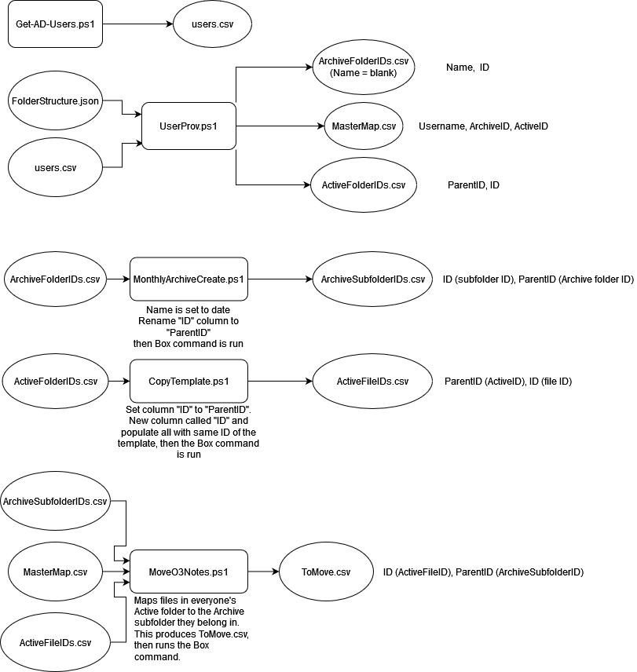

Scripts Overview
- There are 5 scripts that are responsible for maintaining this system.
Scheduling
There is a specific order these scripts should be run. This can be set with Windows Task Scheduler.
- Get-AD-Users.ps1
Whenever new people are added to the organization, run this script before running Userprov.ps1
- Userprov.ps1
Whenever new people are added to the organization.
- MonthlyArchiveCreate.ps1
On the first of each month.
- CopyTemplate.ps1
Every Sunday
- MoveO3Notes.ps1
On the last day of each month.
Inputs and Outputs
The Powershell scripts that power this system do so by taking and modifying CSV files, then making API calls to Box. Each script takes in at least one input file and outputs another. Some times this means modifying an existing file, such as filling out a column with a value, or switching column names. This is done so the --bulk-file-path= flag is capable of taking the CSV files as input to perform all the desired actions on Box’s backend.
Below is an image showing the inputs and outputs for the scripts.
